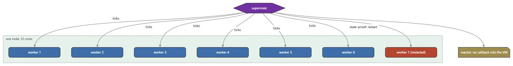

Concurrency & distribution
Excellent substrates: nodes, supervision, multicore, fleet; the unifying vocabulary is design-only.
6 Strong · 4 Solid · 1 Partial · 1 Emerging
Measured against: Go · Akka · Erlang/OTP · Ray · Folders: base/concurrent · base/cluster · base/network

An unusual shape: the substrates are complete and excellent, while the vocabulary over them is design-only. Three sub-planes ship, each heavily guarded with real multi-process tests -- OTP-style supervised nodes, a measured-gated multicore tier, an elastic HTTP worker fleet -- over a full libuv reactor with mTLS. What is not built is the plane's own headline: the one routing vocabulary (Concurrently()) that would let you say 'do this concurrently' and land it on the right substrate.
What a maker does with it, and what stands out
- OTP-style supervision proven under real kills -- the pragmatic 80% of Erlang in a non-BEAM language
- A measured-gated multicore tier: bit-identical or justified, elementwise killed by the memory wall
- A full libuv reactor where no callback crosses into Haro (submit -> ticket -> await)
- An elastic HTTP worker fleet with a smart router and autoscaling, guarded with a real 3-process fleet
What is owed
- The routing vocabulary: Concurrently() + stzTask/ticket/stzWorkshop (CN0-CN5)
- Channels and structured concurrency
- Federation over the node plane; UDP and a native WebSocket; a managed-PKI mTLS story
- Dynamic task-graph distribution and live multi-machine verification
One example, run
The engine sees this laptop's twelve cores. The cluster, fleet and multicore guards are this group's proof; here, the count.
? StzEngineSystemCpuCount()
12
run on 2026-10-01 at 01:40
The lanes, one by one
Lanes and their notes are quoted as they were read at the source, on Read from the source on 2026-09-16, from a read-only main worktree.